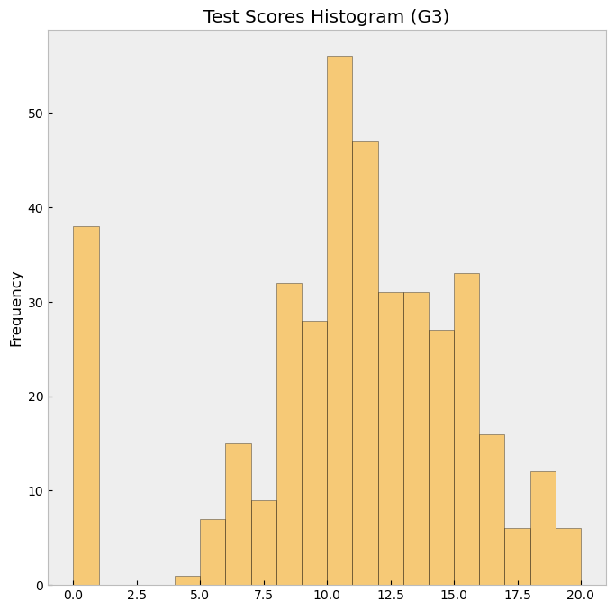
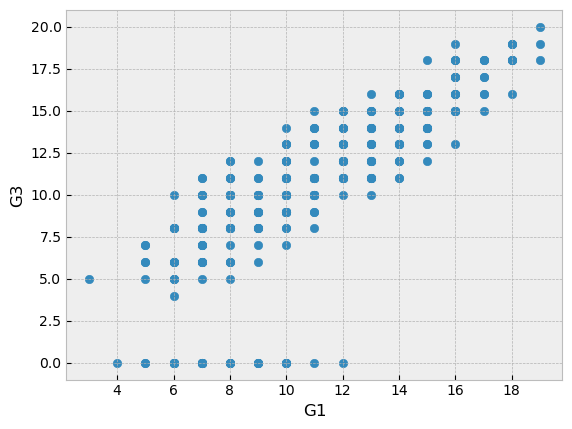

import numpy as np
import pandas as pd
import matplotlib.pyplot as plt
import statsmodels.api as smLab 2
Machine Learning
Today
Setup the environment
- Open Your Terminal or Command Prompt
- Activate Your Conda Environment - make sure it is active before running the installation commands below!
conda activate ml2025 - Install Matplotlib
conda install matplotlib - Install statsmodel
conda install statsmodels - Install pandas
conda install pandas - Install sklearn
conda install scikit-learn
(or pip install packagename if you don’t use conda or conda install doesn’t work for some reason)
A quick introduction to the packages we will use:
- NumPy (np): NumPy (Numerical Python) provides support for large, multi-dimensional arrays and matrices, along with mathematical functions to operate on these arrays. It is highly optimized for numerical computations and serves as the foundation for many other scientific computing libraries, including Pandas. NumPy’s ndarray is the fundamental data structure, offering efficient operations like element-wise calculations, linear algebra, and statistical functions.
Pandas (
pd): Pandas is built on the NumPy package and its key data structure is called the DataFrame. DataFrames allow you to store and manipulate tabular data in rows of observations and columns of variables. Pandas provides functions for data cleaning, transformation, and analysis, making it the primary package for handling structured datasets. Unless you are working with large datasets where efficiency is key, this is the main package for loading and managing data.Matplotlib (
plt): Matplotlib is a powerful library for creating static, animated, and interactive visualizations in Python. It provides fine-grained control over plots, allowing users to create line charts, histograms, scatter plots, and more. Thepyplotmodule (plt) is a commonly used interface that simplifies the process of creating and customizing plots. (Seaborn (sns) is a useful library built on top of Matplotlib for even nicer and more complex graphs.)Statsmodels (
sm): Statsmodels is a library for estimating and testing statistical models. It provides tools for performing regression analysis, hypothesis testing, and statistical data exploration. Compared to Scikit-learn, which is optimized for predictive modeling, Statsmodels focuses more on statistical inference, offering detailed output on model parameters, significance tests, and confidence intervals.Scikit-learn (
sklearn): Scikit-learn is one of the most widely used libraries for machine learning in Python. It provides efficient implementations of various machine learning algorithms, including regression, classification, clustering, and dimensionality reduction. In addition to modeling, scikit-learn includes utilities for data preprocessing, model selection, and evaluation, making it a comprehensive tool for building and testing predictive models. As sklearn is a huge package, we usually only import individual modules as we need them.
By combining these libraries, we can efficiently analyze data, visualize trends, and build statistical models.
Importing packages
At the start of each notebook we must import the necessary libraries for the code to run.
You will notice that each of these packages are being installed as a shortened version of their name. This helps keep code short. In practice for common packages this is standardised, and almost everyone will used the same ones which I have included below so it’s good to keep them as they are.
As we have just installed these packages, it’s a good practice to verify they has been successfully installed.
print(np.__version__)
print(pd.__version__)
print(plt.matplotlib.__version__)
print(sm.__version__)2.0.1
2.2.3
3.10.0
0.14.4Dataframes with pandas
Use the pandas cheat sheet to help you with the following excercises: https://pandas.pydata.org/Pandas_Cheat_Sheet.pdf
Let’s create a DataFrame from a dictionary. Here, each key becomes a column in the DataFrame, and the values are the data entries for those columns. A dictionary is a built-in data type that stores collections of data as key-value pairs.
data_example = {
'Name': ['Alice', 'Bob', 'Charlie', 'David', 'Eve'],
'Age': [25, 30, 35, 40, 45],
'City': ['New York', 'Los Angeles', 'Chicago', 'Houston', 'Phoenix']
}
print(dir(data_example)) # print availbale methods and attributes
print(type(data_example))
df = pd.DataFrame(data_example)
print(type(df))
print(str(df)) # this is actually displayed as tabular data, not the list structure as in R
df # prints an even nicer table
#We can also do this directly in the DataFrame constructor but it's a bit more cumbersome:
#df = pd.DataFrame(data_example, columns=['Name', 'Age', 'City'], index=['a', 'b', 'c', 'd', 'e'], City=['New York', 'Los Angeles', 'Chicago', 'Houston', 'Phoenix'])['__class__', '__class_getitem__', '__contains__', '__delattr__', '__delitem__', '__dir__', '__doc__', '__eq__', '__format__', '__ge__', '__getattribute__', '__getitem__', '__getstate__', '__gt__', '__hash__', '__init__', '__init_subclass__', '__ior__', '__iter__', '__le__', '__len__', '__lt__', '__ne__', '__new__', '__or__', '__reduce__', '__reduce_ex__', '__repr__', '__reversed__', '__ror__', '__setattr__', '__setitem__', '__sizeof__', '__str__', '__subclasshook__', 'clear', 'copy', 'fromkeys', 'get', 'items', 'keys', 'pop', 'popitem', 'setdefault', 'update', 'values']
<class 'dict'>
<class 'pandas.core.frame.DataFrame'>
Name Age City
0 Alice 25 New York
1 Bob 30 Los Angeles
2 Charlie 35 Chicago
3 David 40 Houston
4 Eve 45 Phoenix| Name | Age | City | |
|---|---|---|---|
| 0 | Alice | 25 | New York |
| 1 | Bob | 30 | Los Angeles |
| 2 | Charlie | 35 | Chicago |
| 3 | David | 40 | Houston |
| 4 | Eve | 45 | Phoenix |
Display the data frame to make sure it worked:
df| Name | Age | City | |
|---|---|---|---|
| 0 | Alice | 25 | New York |
| 1 | Bob | 30 | Los Angeles |
| 2 | Charlie | 35 | Chicago |
| 3 | David | 40 | Houston |
| 4 | Eve | 45 | Phoenix |
Select only the ‘Name’ and ‘Age’ Columns and display them:
df["Name"]
df.Age
type(df["Age"])
df[['Name', 'Age']]
type(df[['Name', 'Age']]) # this is still a pandas dfpandas.core.frame.DataFrameUse .describe() to compute basic statistics for the numerical columns:
Age_quant = df.describe() # in a nice and handy df, no weird print() output
type(Age_quant)pandas.core.frame.DataFrameSubset the DataFrame for people older than 30 and display it:
print(df[df['Age'] > 30])
df['Age'].unique() # just for remembering Name Age City
2 Charlie 35 Chicago
3 David 40 Houston
4 Eve 45 Phoenixarray([25, 30, 35, 40, 45])How to select by string match or more specific regex:
df[df['City'].isin(['New York', 'Los Angeles'])]
df[df["Name"].str.contains("e")] # filter names containing small e
df[df["Name"].str.contains("v|E")] # filter names containing small v or large E
| Name | Age | City | |
|---|---|---|---|
| 3 | David | 40 | Houston |
| 4 | Eve | 45 | Phoenix |
Add a new column called ‘YearOfBirth’ for the year of birth of the people in the dataset (assuming they have already had their birthdays):
## WRONG WRONG WRONG: Explanation below
df.YearOfBirth = 2025 - df.AgeYou can use attribute access to modify an existing element of a Series or column of a DataFrame, but be careful; if you try to use attribute access to create a new column, it creates a new attribute rather than a new column and this will raise a UserWarning:
df["YearOfBirth"] = 2025 - df["Age"]
df| Name | Age | City | YearOfBirth | |
|---|---|---|---|---|
| 0 | Alice | 25 | New York | 2000 |
| 1 | Bob | 30 | Los Angeles | 1995 |
| 2 | Charlie | 35 | Chicago | 1990 |
| 3 | David | 40 | Houston | 1985 |
| 4 | Eve | 45 | Phoenix | 1980 |
Student Performance Dataset
The dataset used is the student performance dataset as discussed in the lecture this week. More information on the dataset can be found here: https://archive.ics.uci.edu/dataset/320/student+performance
We are going to focus on the students maths results rather than their portuguese results.
First read in the data from the CSV file into a pandas dataframe using pd.read_csv (the datset is called student-mat.csv):
(Hint: you will want to set "sep=';', as this is the seperator used in the data)
perf = pd.read_csv("../student-mat.csv", sep = ";")Now we print the shape of our data to see its dimensions.
print(perf.shape) # shape = dim in R
perf(395, 33)| school | sex | age | address | famsize | Pstatus | Medu | Fedu | Mjob | Fjob | ... | famrel | freetime | goout | Dalc | Walc | health | absences | G1 | G2 | G3 | |
|---|---|---|---|---|---|---|---|---|---|---|---|---|---|---|---|---|---|---|---|---|---|
| 0 | GP | F | 18 | U | GT3 | A | 4 | 4 | at_home | teacher | ... | 4 | 3 | 4 | 1 | 1 | 3 | 6 | 5 | 6 | 6 |
| 1 | GP | F | 17 | U | GT3 | T | 1 | 1 | at_home | other | ... | 5 | 3 | 3 | 1 | 1 | 3 | 4 | 5 | 5 | 6 |
| 2 | GP | F | 15 | U | LE3 | T | 1 | 1 | at_home | other | ... | 4 | 3 | 2 | 2 | 3 | 3 | 10 | 7 | 8 | 10 |
| 3 | GP | F | 15 | U | GT3 | T | 4 | 2 | health | services | ... | 3 | 2 | 2 | 1 | 1 | 5 | 2 | 15 | 14 | 15 |
| 4 | GP | F | 16 | U | GT3 | T | 3 | 3 | other | other | ... | 4 | 3 | 2 | 1 | 2 | 5 | 4 | 6 | 10 | 10 |
| ... | ... | ... | ... | ... | ... | ... | ... | ... | ... | ... | ... | ... | ... | ... | ... | ... | ... | ... | ... | ... | ... |
| 390 | MS | M | 20 | U | LE3 | A | 2 | 2 | services | services | ... | 5 | 5 | 4 | 4 | 5 | 4 | 11 | 9 | 9 | 9 |
| 391 | MS | M | 17 | U | LE3 | T | 3 | 1 | services | services | ... | 2 | 4 | 5 | 3 | 4 | 2 | 3 | 14 | 16 | 16 |
| 392 | MS | M | 21 | R | GT3 | T | 1 | 1 | other | other | ... | 5 | 5 | 3 | 3 | 3 | 3 | 3 | 10 | 8 | 7 |
| 393 | MS | M | 18 | R | LE3 | T | 3 | 2 | services | other | ... | 4 | 4 | 1 | 3 | 4 | 5 | 0 | 11 | 12 | 10 |
| 394 | MS | M | 19 | U | LE3 | T | 1 | 1 | other | at_home | ... | 3 | 2 | 3 | 3 | 3 | 5 | 5 | 8 | 9 | 9 |
395 rows × 33 columns
The data has should have 395 samples and 34 features.
Another useful function in pandas for seeing some overview information about datasets is .head(). This prints the first 5 rows of our data. Try it with our data:
perf.head(7)| school | sex | age | address | famsize | Pstatus | Medu | Fedu | Mjob | Fjob | ... | famrel | freetime | goout | Dalc | Walc | health | absences | G1 | G2 | G3 | |
|---|---|---|---|---|---|---|---|---|---|---|---|---|---|---|---|---|---|---|---|---|---|
| 0 | GP | F | 18 | U | GT3 | A | 4 | 4 | at_home | teacher | ... | 4 | 3 | 4 | 1 | 1 | 3 | 6 | 5 | 6 | 6 |
| 1 | GP | F | 17 | U | GT3 | T | 1 | 1 | at_home | other | ... | 5 | 3 | 3 | 1 | 1 | 3 | 4 | 5 | 5 | 6 |
| 2 | GP | F | 15 | U | LE3 | T | 1 | 1 | at_home | other | ... | 4 | 3 | 2 | 2 | 3 | 3 | 10 | 7 | 8 | 10 |
| 3 | GP | F | 15 | U | GT3 | T | 4 | 2 | health | services | ... | 3 | 2 | 2 | 1 | 1 | 5 | 2 | 15 | 14 | 15 |
| 4 | GP | F | 16 | U | GT3 | T | 3 | 3 | other | other | ... | 4 | 3 | 2 | 1 | 2 | 5 | 4 | 6 | 10 | 10 |
| 5 | GP | M | 16 | U | LE3 | T | 4 | 3 | services | other | ... | 5 | 4 | 2 | 1 | 2 | 5 | 10 | 15 | 15 | 15 |
| 6 | GP | M | 16 | U | LE3 | T | 2 | 2 | other | other | ... | 4 | 4 | 4 | 1 | 1 | 3 | 0 | 12 | 12 | 11 |
7 rows × 33 columns
Checking for Missing Data
We can run the following code to check for NA values.
(There are some subtle differences between null which is the default in python, nan (Not a Number) from NumPy and the new pd.NA value specific to pandas, for our case it’s mostly plenty to treat all as missing values, the vast majority you will encounter will be null, so that’s what we will use.)
feat_miss = perf.columns[perf.isnull().any()]
print(feat_miss)
feat_miss.shapeIndex([], dtype='object')(0,)Luckily in this case we don’t have any missing data. We will look at missingness and imputation in future labs however, as most Machine Learning algorithms are not able to natively handle missing values, and many datasets contain them.
Summary Statistics:
We want to see some of the headline information about our data before we analyse it. For this we can use the .describe() function we learned above.
# perf.describe(include=[str.__contains__["edu"]]) # dont work
perf.loc[:, perf.columns.str.contains("edu")].describe()
# why is this weird shit complicated
perf[['Medu', 'Fedu']].describe()
perf.filter(regex="edu", axis=1).describe() # this is cool and easy
| Medu | Fedu | |
|---|---|---|
| count | 395.000000 | 395.000000 |
| mean | 2.749367 | 2.521519 |
| std | 1.094735 | 1.088201 |
| min | 0.000000 | 0.000000 |
| 25% | 2.000000 | 2.000000 |
| 50% | 3.000000 | 2.000000 |
| 75% | 4.000000 | 3.000000 |
| max | 4.000000 | 4.000000 |
This gives us the following info:
count: The number of non-missing (non-NaN) values.
mean: The mean of the values.
std: The standard deviation of the values.
min: The minimum value.
25%: The 25th percentile (first quartile).
50% (median): The median of the data.
75%: The 75th percentile (third quartile).
max: The maximum value.
We can also specify percentiles other than the default values of 25, 50, 75:
custom_percentiles = perf.describe(percentiles=[.20, .40, .60, .80])
print(custom_percentiles) age Medu Fedu traveltime studytime failures famrel freetime goout Dalc Walc \
count 395.000000 395.000000 395.000000 395.000000 395.000000 395.000000 395.000000 395.000000 395.000000 395.000000 395.000000
mean 16.696203 2.749367 2.521519 1.448101 2.035443 0.334177 3.944304 3.235443 3.108861 1.481013 2.291139
std 1.276043 1.094735 1.088201 0.697505 0.839240 0.743651 0.896659 0.998862 1.113278 0.890741 1.287897
min 15.000000 0.000000 0.000000 1.000000 1.000000 0.000000 1.000000 1.000000 1.000000 1.000000 1.000000
20% 15.000000 2.000000 1.000000 1.000000 1.000000 0.000000 3.000000 2.000000 2.000000 1.000000 1.000000
40% 16.000000 2.000000 2.000000 1.000000 2.000000 0.000000 4.000000 3.000000 3.000000 1.000000 2.000000
50% 17.000000 3.000000 2.000000 1.000000 2.000000 0.000000 4.000000 3.000000 3.000000 1.000000 2.000000
60% 17.000000 3.000000 3.000000 1.000000 2.000000 0.000000 4.000000 3.000000 3.000000 1.000000 3.000000
80% 18.000000 4.000000 4.000000 2.000000 3.000000 1.000000 5.000000 4.000000 4.000000 2.000000 3.200000
max 22.000000 4.000000 4.000000 4.000000 4.000000 3.000000 5.000000 5.000000 5.000000 5.000000 5.000000
health absences G1 G2 G3
count 395.000000 395.000000 395.000000 395.000000 395.000000
mean 3.554430 5.708861 10.908861 10.713924 10.415190
std 1.390303 8.003096 3.319195 3.761505 4.581443
min 1.000000 0.000000 3.000000 0.000000 0.000000
20% 2.000000 0.000000 8.000000 8.000000 8.000000
40% 3.000000 2.000000 10.000000 10.000000 10.000000
50% 4.000000 4.000000 11.000000 11.000000 11.000000
60% 4.000000 4.000000 12.000000 12.000000 12.000000
80% 5.000000 10.000000 14.000000 14.000000 14.000000
max 5.000000 75.000000 19.000000 19.000000 20.000000 Let’s plot the distribution of the final grade G3
perf['G3'].hist(bins=20, color = "orange", alpha = 0.5, edgecolor = 'black', figsize = (8, 8))
plt.title("Test Scores Histogram (G3)")
plt.ylabel("Frequency")
plt.grid(False) # Remove grid if not needed
plt.style.use("fast") # does not override manual settings
plt.show()
The plot above just used a simple line of code, but using matplotlib we can make much more impressive graphs. Below is an example of using matplotlip to create a scatter plot of G1 vs G3.
plt.scatter(perf['G1'], perf['G3'])
plt.xlabel('G1')
plt.ylabel('G3')
plt.show()
Use matplotlib to make some more plots of the data to try discover some interesting patterns. See if you can get creative with multiple variables, colours etc.
Here is a cheatsheet for matplotlib: https://matplotlib.org/cheatsheets/cheatsheets.pdf
Splitting the data into training and test sets
First we want to split our data into seperate dataframes for X and Y. This is common practice as many of the machine learning algorithms we use as well as regularisation and imputation functions will expect the data split up. It is very important to keep track of both and ensure they still match after any preprocessing. If your X values no longer align with your Y targets you will get very wrong results!
For this case we want to do a very simple regression so we use the final year grade as our target variable, and first period grade as our only explanatory variable to start.
X = perf['G1'].values
y = perf['G3'].values
#As we have a single feature, we need to reshape it to a 2D array or some of our functions will give errors.
X= X.reshape(-1, 1)
y = y.reshape(-1, 1)The from sklearn.model_selection import train_test_split command imports the train_test_split function from scikit-learn specifically, which is used to split the dataset into training and test sets.
from sklearn.model_selection import train_test_splitSetting the Random Seed: seed = 0 sets the seed for the random number generator to 0. This ensures that the results are reproducible; anyone running this code with the same dataset and seed will get the same split of data. Generally this should be set at the start of your notebook.
Splitting the Dataset: The code below splits the features (X) and the target variable (y) into training and test sets. 20% (test_size = 0.2) of the data is allocated to the test set, while the remaining 80% is used for training the model. The random_state = seed parameter ensures that the split is reproducible.
seed = 0
X_train, X_test, y_train, y_test = train_test_split(X, y, test_size = 0.2, random_state = seed)
print(X.shape)
print(y.shape)
print(X_train.shape)
print(y_train.shape)
print(X_test.shape)
print(y_test.shape)Standardization:
Standardization refers to the process of transforming each feature in your data so that it has a mean of 0 and a standard deviation of 1. This is done by subtracting the mean of each feature and then dividing by the standard deviation for each feature. The formula used is:
z=(x-μ)/σ Here, x is the original feature value μ is the mean of the feature, and σ is the standard deviation of the feature.
This is very useful for machine learning because it can speed up convergence, enhance numerical stability and prevent features from dominating. The main downside is that it makes interpretation harder, but as we are only concerned with prediction that’s not an issue for us!
To do this follow the following steps:
Importing StandardScaler:from sklearn.preprocessing import StandardScaler imports the StandardScaler class, which provides the functionality to standardize features.
Creating a StandardScaler Instance: sc = StandardScaler() creates an instance of StandardScaler. This instance will then be used to compute the mean and standard deviation for each feature in the dataset, and by keeping the same instance across the testing and training sets we ensure consistancy.
Fitting and Transforming the Training Data: X_train = sc.fit_transform(X_train) computes the mean and standard deviation of each feature in the training set X_train, and then standardizes the training set by applying the transformation z=(x-μ)/σ. (The fit_transform method is a combination of fit (to compute the scaling parameters) and transform (to apply the standardization).) The standardized training data is then reassigned to X_train.
Transforming the Testing Data: X_test = sc.transform(X_test) applies the same transformation to X_test using the mean and standard deviation calculated from the training set. It’s crucial to use the parameters from the training set to ensure the model evaluates on the same scale. The standardized test data is reassigned to X_test.
Ordinary Least Squares Regression with the Closed Form Solution :
Using the X_train and y_train vectors, calculate the coefficients for a simple OLS Regression by performing the matrix operations for the closed form solution we learned in class.
Hint: In order for us to have an intercept in the regression (usually this is something we want), you will have to add a column of ones to X_train. You can do this with the code X_train = np.hstack((np.ones_like(y_train), X_train))
Use these coefficients to caclulate the predicted y-values.
Hint: You will once again have to add a vector of ones
Bonus: It’s even better to define a function to do this. Can you make one which takes X_train and y_train as inputs and gives the betas and the predictions as outputs.
Calculate Coefficients using Statsmodels
Now we will use statsmodels inbuilt functionalities to calculate fit the model and calculate the predictions. I have included the code here, run it and make sure you understand it as many of the different models we will fit in this course will use similar syntax.
# We can also add intercept terms using statsmodels.
X_train_sm = sm.add_constant(X_train)
X_test_sm = sm.add_constant(X_test)
# Define and fit the model
model = sm.OLS(y_train, X_train_sm).fit()
# Predictions using statsmodels
predictions_statsmodels = model.predict(X_test_sm)print("Coefficients from closed-form solution:", beta)
print("Coefficients from statsmodels:", model.params)If everything went well they should be the same.
Calculate MSE for the Models:
Now let’s calculate the MSE for the models using the mean_squared_error function from sklearn.metrics. It takes the form: mean_squared_error(y_test, predictions_from_model)
from sklearn.metrics import mean_squared_error
Higher Dimensions
We will now create polynomials of X_train and X_test to fit a polynomial regression model. We will use the PolynomialFeatures class from scikit-learn to create the polynomial features. See if you can figure out how to use this function to add the polynomial expansion of our explanatory variable even better if you can make a fucntion to do this.
from sklearn.preprocessing import PolynomialFeatures
Now we can try create a plot of the mse values for each polynomial degree from 1 to 15.
Lets plot the polynomial regression model with degree 5, and compare it with the linear regression model.
Based on the above graphs what do you think the best function for the relationship is? Are our polynomial terms adding value?
Bonus: If you have time, try add some of the numerical variables we left out of X back in and see if you can make a better function.